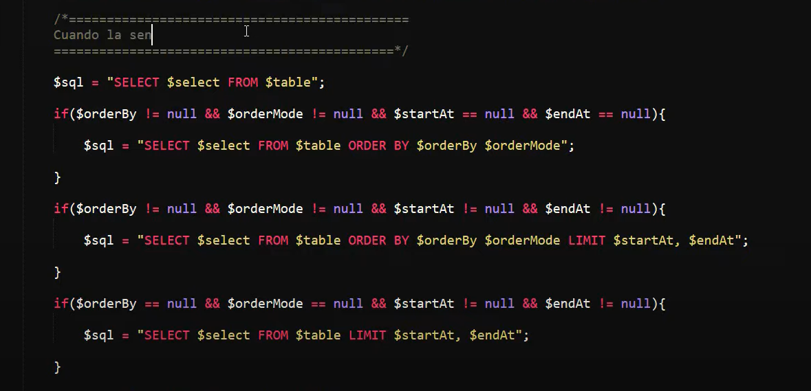
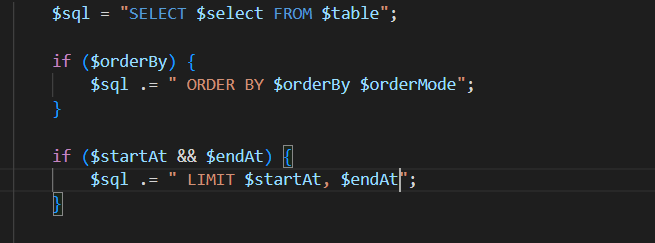

Hay aun mucho mas por aprender...
Buenas practicas: Codigo espageti vs codigo elegante
 
Login basico en PHP
Un login básico, sería tener la vista del login y mi archivo php para poder tomar y validar los datos del request, después verificar si existe el usuario ó no en la bbdd, si existe se inicia una sesión guardando sus datos en (valga la redundancia) la variable de sesión hasta tener un logout, caso contrario retornar un mensaje de usuario no existente
Encriptar una contrasenia en PHP
En php se puede utilizar la función "md5" para poder encriptar una contraseña en ese formato, pero también existe la función hash para hacerlo.
Enviar correos electronicos en PHP
PHPMailer se utilizaría para enviar correos por php.